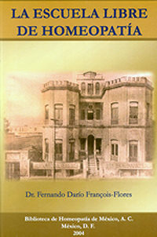

| 
El Dr. Francois-Flores con su característico empeño lleno de minuciosidad, hace en este libro, una excelente recopilación histórica tanto de la institución, como de su fundadore, el maestro Higinio G. Pérez, así como algunos de los más importantes seguidores de esta obre, en una muy interesante exposición que quedará como un homenaje a la Homeopatía nacional. |